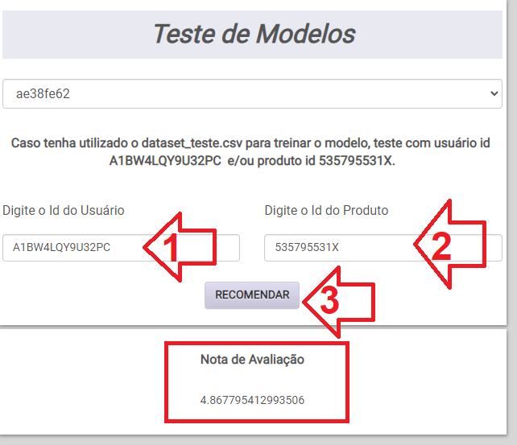

Neste tutorial, você aprenderá a criar e implantar um sistema de recomendação usando inteligência artificial invocado por meio de uma API RESTful simples e fácil de usar.
Para usar o sistema de recomendação é preciso enviar um dataset no format CSV. Deve conter as seguintes colunas:
Abaixo um exemplo de dataset com o formato esperado. Este exemplo completo pode ser baixado neste link dataset_test.csv.
| UserId | ProductId | Rating |
|---|---|---|
| A39HTATAQ9V7YF | 0205616461 | 5.0 |
| A3JM6GV9MNOF9X | 0558925278 | 3.0 |
| A1Z513UWSAAO0F | 0558925278 | 5.0 |
Para executar estes tutorial será necessário o dataset de exemplo disponível no link dataset_test.csv
Acesse o https://suggeri.anvil.app/, clique no menu Login e crie uma conta nova com seu e-mail e senha.
Acesse Treinar Modelo no menu e faça o upload do dataset de exemplo.
Depois do upload do dataset, é iniciado automaticamente o treinamento do modelo.
Aguarde alguns instantes até que o estado do modelo seja Treinamento Finalizado.
A chave do modelo será o modelo id utilizado para realizar as predições.
Anote a chave do modelo gerada, pois precisaremos deste código mais adiante no tutorial. Na imagem está o modelo id de código ae38fe62.
Acesse Testar Modelo no menu e escolha o modelo que acabamos de treinar.
Depois do modelo escolhido, são mostradas as opções de testes.
Observe a mensagem sobre o dataset_teste.csv, pois usaremos o usuário id A1BW4LQY9U32PC e o produto id 535795531X para os testes neste tutorial.
Vamos utilizar o usuário id A1BW4LQY9U32PC para que sejam recomendados itens/produtos que este usuário tenha interesse. Basta digitar o usuário id e clicar no botão Recomendar. Será exibida uma lista com os itens.
Vamos utilizar o produto id 535795531X para que sejam recomendados usuários que tenham interesse. Basta digitar o usuário id e clicar no botão Recomendar. Será exibida uma lista com os usuários.
Vamos utilizar usuário id A1BW4LQY9U32PC e o produto id 535795531X para que sejam recomendada qual a Nota de Avaliação deste usuário para este produto. Basta digitar o usuário id, produto id e clicar no botão Recomendar. Será exibida uma Nota de Avaliação.

Agora que já testamos o modelo treinado com sucesso, vamos acessar estes mesmos dados usando a API da Suggeri. A documentação completa em diversas linguagens de programação para acessar a API está disponível neste link.
Vamos utilizar o modelo que acabamos de treinar e o usuário id A1BW4LQY9U32PC para que sejam recomendados itens/produtos que este usuário tenha interesse.
O link para acesso às recomendações via API ficaria da seguinte forma:
https://suggeri.anvil.app/_/api/predict_item/ae38fe62/A1BW4LQY9U32PC
Para testar, basta acessar esta URL pelo Browser e teremos o mesmo resultado encontrado anteriormente.
Vamos utilizar o produto id 535795531X para que sejam recomendados usuários que tenham interesse. Basta digitar o usuário id e clicar no botão Recomendar. Será exibida uma lista com os usuários.
O link para acesso às recomendações via API ficaria da seguinte forma:
https://suggeri.anvil.app/_/api/predict_user/ae38fe62/535795531X
Para testar, basta acessar esta URL pelo Browser e teremos o mesmo resultado encontrado anteriormente.
Vamos utilizar usuário id A1BW4LQY9U32PC e o produto id 535795531X para que sejam recomendada qual a Nota de Avaliação deste usuário para este produto.
O link para acesso às recomendações via API ficaria da seguinte forma:
https://suggeri.anvil.app/_/api/predict_user_item/ae38fe62/A1BW4LQY9U32PC/535795531X